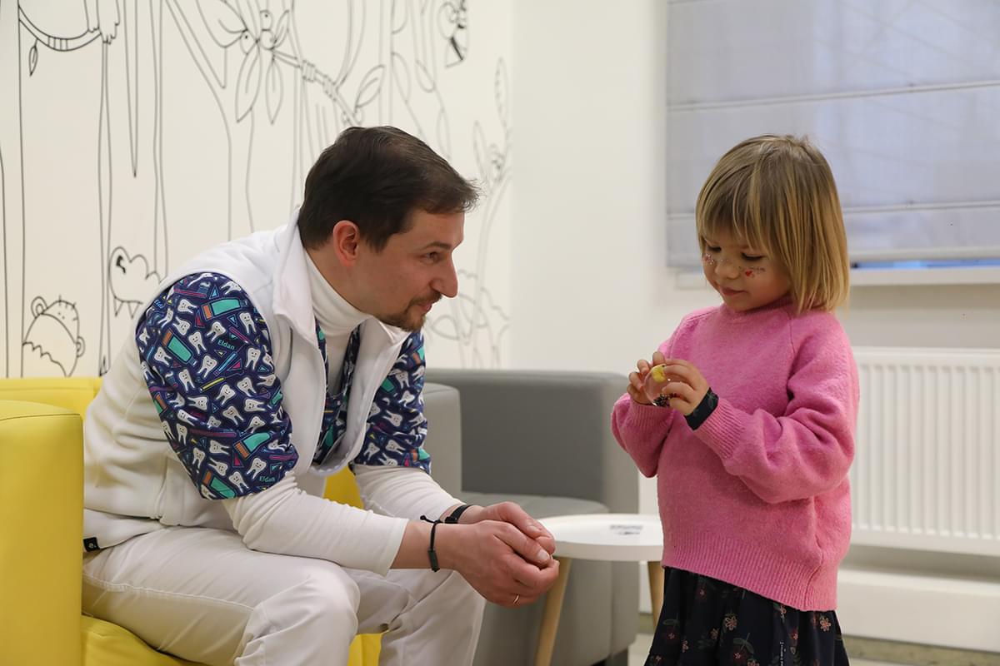
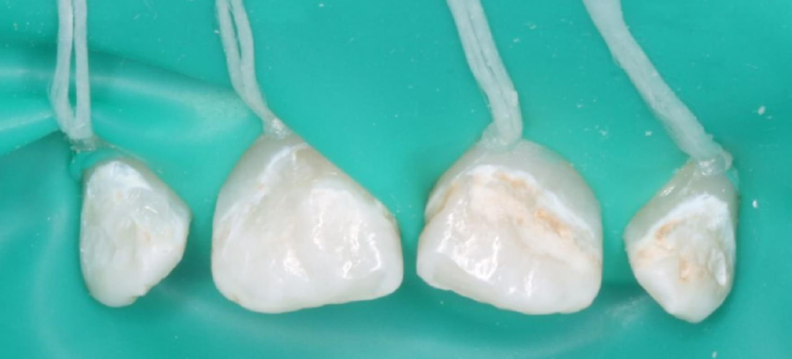
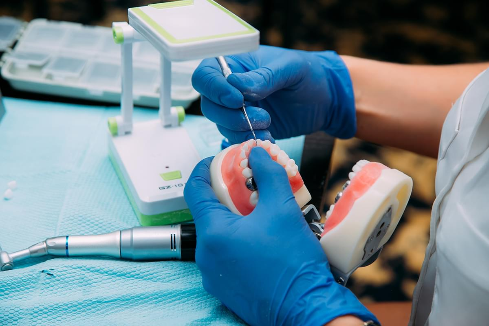

Курс 1. Сучасна філософія та принципи, підходи та техніки дитячого стоматологічного прийому
Курс-інтенсив з дитячої стоматології “Сучасна філософія та принципи, підходи та техніки дитячого стоматологічного прийому” буде корисним для тих, хто займається лікуванням дітей або планує це робити, а тематика буде цікавою для тих, хто вже давно займається лікуванням дітей або організовує дитячий стоматологічний прийом. Екстракт п’ятнадцятирічного досвіду роботи в дитячій стоматології: поради і рекомендації, які Ви вже завтра зможете використати при роботі з дітьми.
Перейти до курсуКурс 2. Підготовка до дитячого стоматологічного прийому та особливості первинної консультації
Правильна підготовка – це запорука успіху. Дитяча стоматологія – не виключення. Якщо відповідним чином підготуватись, знати нюанси стоматологічного прийому дітей, як з ними працювати та на них реагувати, лікування дітей може бути цікавим і корисним. Наш курс для того, щоб допомогти Вам налаштувати його таким чином. Первинна консультація – перший контакт з маленьким пацієнтом і його батьками, від якого значною мірою залежить успіх лікування. Як побудувати її таким чином, щоб отримати оптимальний результат комунікації і лікування? Про це детально на нашому курсі.
Перейти до курсуКурс 3. Особливості діагностики та використання збільшення на дитячому прийомі
В медицині є таке твердження, що правильний діагноз - половина лікування. Це, безумовно, стосується також дитячої стоматології. В нашому курсі ми розкриваємо особливості діагностики та діагностичної послідовності, які дозволяють побудувати стоматологічний прийом дітей таким чином, щоб імовірність діагностичної похибки була мінімальною. На курсі ми охоплюємо діагностиний процес, починаючи від коректного збору анамнезу, огляду і аналізу того, що ми бачимо від зовнішньо до внутрішньоротового дослідження і до складання плану лікування.
Перейти до курсуКурс 4. Немедикаментозне управління поведінкою. Техніки, методи, інструменти та матеріали

Курс про те, без чого дитяча стоматологія неможлива. Якщо дитина скаже “ні”, то якісно гуманно і безпечно ми її полікувати не зможемо. На нашому курсі Ви дізнаєтесь, як налаштовувати дітей (і батьків) на прийом і будувати з ними довготривалі професійні стосунки із задоволенням для них і для себе. Наш курс - екстракт технік, досліджень та досвіду у галузі управління поведінкою. Опрацювавши його, Ваш стоматологічний прийом дітей зміниться на краще і буде продуктивнішим, а Ваші маленькі пацієнти більш задоволеними.
Перейти до курсуКурс 5. Застосування Закис Азоту Кисневої Седації (ЗАКС) в дитячій стоматології
В дитячій стоматології важливо відновити стоматологічне здоров‘я та забезпечити позитивний досвід лікування. Закис азоту киснева седація - методика, яка дозволяє цього досягти, коли інші методи себе вичерпали. Для того, аби розвіяти страхи, міфи, сумніви та почати використовувати методику якісно, ефективно та безпечно - запрошуємо Вас на наш курс, присвячений Закис Азоту Кисневій Седації в дитячій стоматології.
Перейти до курсуКурс 6. Профілактика в дитячій стоматології: індивідуальна та професійна
Профілактика в стоматології - це фундамент як стоматологічного здоров’я, так і успіху стоматологічного лікування. Особливо це актуально для дитячої стоматології, коли все тільки формується. Тож в нашому курсі все про профілактику на стоматологічному прийомі дітей. Ми детально розглянемо диспансеризацію та визначення факторів ризику розвитку карієсу. Ви знайдете для себе відповіді на питання: як часто пацієнт повинен відвідувати профілактичні огляди? Чому саме так?
Перейти до курсуКурс 7. Місцеве знеболення в дитячій стоматології
Місцеве знеболення – один з пропускних пунктів у якісну, безпечну та гуманну дитячу стоматологію. Наш курс допоможе Вам впровадити його в лікувальну практику. Ви зможете проводити місцеве знеболення якісно, ефективно та впевнено, а відеодемонстрації допоможуть Вам у освоєнні матеріалу. А якісно проведене місцеве знеболення – можливість проводити лікування комфортно для пацієнта і для лікаря, це можливість побудови тривалих продуктивних стосунків з дитиною і можливість проводити маніпуляції високої складності.
Перейти до курсуКурс 8. Ізоляція робочого поля системою кофердам в дитячій стоматології

Якісна ізоляція робочого поля - один із пропускних пунктів до якісної, прогнозованої, безпечної та якісної дитячої стоматології. Коли дитячий стоматолог впроваджує кофердам до своєї рутинної практики, його робота починає набувати нової якості. Ефективна ізоляція - це можливість надати стоматологічну допомогу вищого рівня нашим маленьким пацієнтам і при цьому отримати більше задоволення від роботи. Тому цю тему варто освоїти кожному дитячому стоматологу, аби перевести стоматологічний прийом дітей прийом на новий рівень.
Перейти до курсуКурс 9. Карієсологія, принципи і техніки реставраційної дитячої стоматології
Карієс - найпоширеніша хвороба на планеті. Починається він, на жаль, найчастіше в дитинстві. Однак саме в дитинстві можна максимально ефективно йому запобігти і таким чином провести лікувально-профілактичні заходи, щоб у майбутньому зберегти стоматологічне здоров'я. В нашому курсі ми зробили акценти саме на лікуванні карієсу саме у дітей. На відеодемонстраціях ми детально демонструємо етапи і послідовність відновлення уражених твердих тканин різних груп зубів у дітей, що допоможе максимально освоїти тематику карієсології та робить курс максимально практичним.
Перейти до курсуКурс 10. Відновлення твердих тканин зубів у дітей стандартними металевими коронками

Стандартні металеві коронки широко використовуються в дитячій стоматології і допомагають лікарям тоді, коли, здавалось би, нічого вдіяти вже не можна. На курсі ми детально розглядаємо показання та протипоказання до застосування, специфіку та особливості використання, переваги та недоліки. Дуже детальна покрокова інструкція дозволить Вам почати використання коронок одразу після проходження курсу, а велика кількість клінічних випадків окреслить особливості та надихне на імплементацію у практику. Доповнює курс детальна поетапна відеодемонстрація використання стандартних металевих коронок в дитячій стоматології.
Перейти до курсуКурс 11. Відновлення твердих тканин зубів у дітей стандартними естетичними коронками
Використання естетичних коронок в дитячій стоматології дозволяє лікарю провидити естетичне, функціональне і прогнозоване відновлення втрачених або уражених твердих тканини зубів у дітей. Наш курс допоможе Вам освоїти їх використання, щоб мати можливість швидко та професійно проводити стоматологічну реабілітацію пацієнтів цією методикою.
Перейти до курсуКурс 12. Ендодонтія тимчасових зубів у дітей
Ендодонтія в дитячій стоматології - розділ з найбільшою кількістю питань. Дитячий стоматолог має знати відповіді на ці питання і вміти вирішувати клінічні ситуації, які з ними пов'язані. Наш курс ми створили спеціально з такою метою. Курс буде корисним для всіх, хто займається лікуванням дітей: дитячим стоматологам, загальним стоматологам, а також тим, хто планує займатись дитячою стоматологією: лікарям-інтернам та студентам.
Перейти до курсуКурс 13. Ендодонтія постійних зубів з несформованим коренем у дітей
Ендодонтія в дитячій стоматології - розділ із найбільшою кількістю питань, а ендодонтія постійних зубів із несформованим коренем - викликає найбільшу кількість питань у дитячій ендодонтії. Наш курс дає на них відповіді і можливість лікарям впевнено проводити ендодонтичне лікування постійних зубів у дітей.
Перейти до курсуКурс 14. Травма тимчасових зубів у дітей. Діагностика, тактика лікування та спостереження
Травма зуба - те, що може статися з будь ким і в будь який момент. А особливо це стосується дітей, які починають активно освоювати навколишнє середовище. Тому знати і вміти зреагувати на травму тимчасового зуба є стратегічно важливим для дитячого стоматолога. Наш курс буде корисний усім стоматологам, адже звернутись з травмою можуть до кожного стоматолога.
Перейти до курсуКурс 15. Травма постійних зубів у дітей. Діагностика, тактика лікування та спостереження.
Травма постійного зуба у дитини - одна з найскладніших задач для дитячого стоматолога. Знати, розуміти, вміти надати допомогу - стратегічно важливо, оскільки може стояти питання збереження зуба на майбутнє у дитини. Наш курс саме для того, аби озброїти лікарів відповідним знаннями і вміннями. Курс стратегічно важливий для кожного лікаря-стоматолога: дитячого, загального чи будь-якої іншої спеціалізації. Особливо рекомендований для лікарів-інтернів та студентів, оскільки на реальних клінічних випадках дозволить побачити різні рішення лікування травми постійних зубів у дітей і в потрібний момент допомогти дитині зберегти постійні зуби.
Перейти до курсуКурс 16. Стоматологічне лікування дітей в умовах анестезіологічного забезпечення
Дитячий стоматолог завжди повинен бути готовим надати допомогу дитині, але не завжди дитина цього хоче. Якщо основні методи кооперації не мали успіху, на допомогу приходить лікування в анестезіологічному забезпеченні. І дитячому лікарю, щоб якісно, прогнозовано і надійно в такому режимі працювати потрібні відповідні знання і навички. Наш курс саме про це і для цього
Перейти до курсуКурс 17. Ортодонтія для дитячого стоматолога
Дитячий стоматолог - лікар не тільки зубів, а повинен бути компетентним в діагностиці і розумінні тактики лікування патології всієї порожнини рота та суміжних областей. Наш курс про питання ортодонтії, в яких важливо бути компетентним дитячому стоматологу.
Перейти до курсуКурс 18. Хірургічні, пародонтологічні та слизові аспекти дитячого стоматологічного прийому
В компетенції дитячого стоматолога, окрім лікування зубів, є нескладні хірургічні операції, як видалення зубів, діагностика і лікування патології пародонту та слизових оболонок порожнини рота. Саме ці питання висвітлює наш курс. Ці знання дозволять вчасно допомогти пацієнту: чи не призначати зайвого лікування, чи вчасно призначити потрібне, або ж скерувати на діагностику, яка може виявити складну системну патологію.
Перейти до курсуКурс 19. Невідкладні стани на прийомі у дитячого стоматолога
Невідкладні стани на дитячому стоматологічному прийомі - це ситуація, з якою найменше хоче зустрітись дитячий стоматолог. Однак повинен знати як розбиратись із цими станами і вміти це реалізувати. Наш курс покликаний допомогти в цьому. Ми підготували його так, аби спорядити лікарів-стоматологів всіма потрібними знаннями і продемонстрованими навичками, які допоможуть не розгубитись у випадку настання відповідного невідкладного стану у дитини.
Перейти до курсуКурс 20. Soft Skills дитячого стоматолога
Кожен дитячий стоматолог - це, перш за все, спеціаліст своєї справи. Однак нерідко він чи вона стикаються з питаннями не стільки їх професійної компетенції, скільки комунікації, вирішення непорозумінь чи конфліктів, кооперація з пацієнтами, їх батьками та в колективі. Робота дитячого стоматолога настільки багатогранна, що без прокачки так званих софт скілів йому не обійтись. Саме цьому і присвячений наш курс.
Перейти до курсу